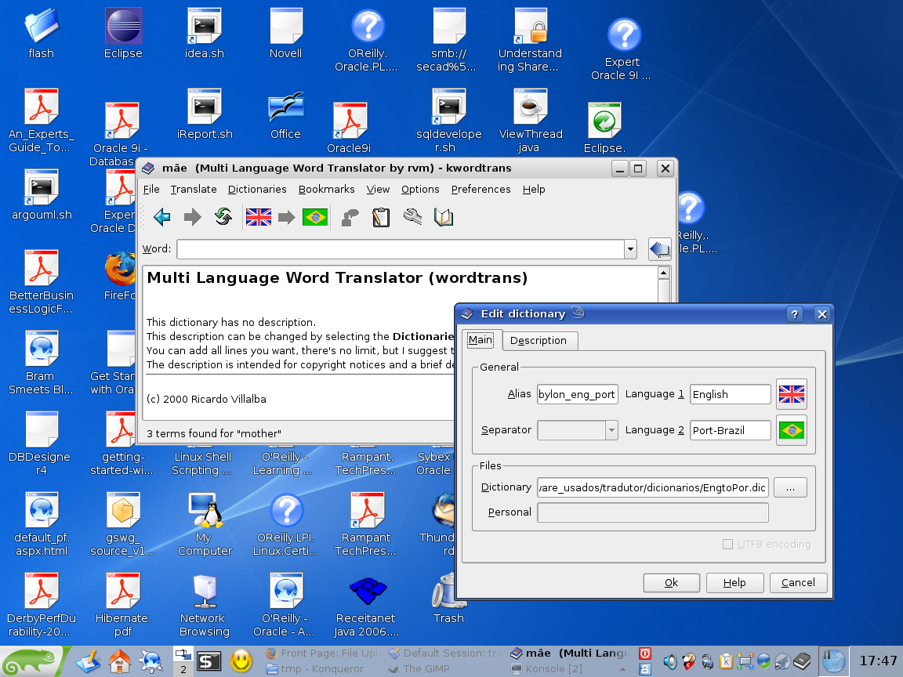

Instalando Visualizador de Dicionários WordTrans no openSUSE 10.2
by Gilberto C. Andrade on 16 fevereiro 2007
Tagged as: Linux, openSUSE, Sistema-Operacional, Traduções,
O wordtransé uma aplicação gráfica que permite a pesquisa de palavras em vários dicionários. O mesmo também pode traduzir uma palavra selecionada pelo mouse. Ele tem suporte a três tipos de dicionários:
- Dicionários do Tradutor Babylon.
- Dicionários de Texto Puro.
- Dicionários servidos pelo Servidor Dict.
Pré-requisitos:
- dictd-1.10.6-21.i586.rpm
- dicts-1.5-281.i586.rpm
- wordtrans-1.1pre15-suse.i586.rpm
- wordtrans-kde-1.1pre15-suse.i586.rpm
Não esqueça de baixar também os dicionários!
Instale-os da seguinte forma:
ti-des05:/home/gilberto/software_usados/tradutor # ll
total 20596
drwxr-xr-x 2 gilberto users 4096 Jun 14 2006 dicionarios
-rw-r--r-- 1 gilberto users 188473 Jun 14 2006 dictd-1.4.9-759.i586.rpm
-rw-r--r-- 1 gilberto users 20083705 Jun 14 2006 dicts-1.5-247.i586.rpm
-rw-r--r-x 1 gilberto users 488334 Jun 2 2006 wordtrans-1.1pre15-suse.i586.rpm
-rw-r--r-x 1 gilberto users 268334 Jun 2 2006 wordtrans-kde-1.1pre15-suse.i586.rpm
-rwxr-xr-x 1 gilberto users 4444 Jun 2 2006 wordtrans_for_suse-2.patch.gz
ti-des05:/home/gilberto/software_usados/tradutor # rpm -Uhv wordtrans-1.1pre15-suse.i586.rpm
Preparing... ########################################### [100%]
1:wordtrans ########################################### [100%]
ti-des05:/home/gilberto/software_usados/tradutor # rpm -Uhv wordtrans-kde-1.1pre15-suse.i586.rpm Preparing… ########################################### [100%] 1:wordtrans-kde ########################################### [100%] ti-des05:/home/gilberto/software_usados/tradutor #
Depois, faça a descompactação dos dicionários em um local:
ti-des05:/home/gilberto/software_usados/tradutor # cd dicionarios/
ti-des05:/home/gilberto/software_usados/tradutor/dicionarios # ll
total 37648
-rw-r--r-- 1 gilberto users 8374290 Jun 14 2006 EngtoEng.dic
-rw-r--r-x 1 gilberto users 4035857 Jun 2 2006 EngtoEng.dic.gz
-rw-r--r-- 1 gilberto users 7372222 Jun 14 2006 EngtoPor.dic
-rw-r--r-x 1 gilberto users 3522348 Jun 14 2006 EngtoPor.dic.gz
-rw-r--r-- 1 gilberto users 7752828 Jun 14 2006 EngtoSpa.dic
-rw-r--r-x 1 gilberto users 3750624 Jun 2 2006 EngtoSpa.dic.gz
-rw-r--r-- 1 gilberto users 1405056 Jun 14 2006 dict-world02-20030215.tar.gz
-rw-r--r-- 1 gilberto users 423 Jun 14 2006 dictionary
-rwxr-xr-x 1 gilberto users 283 Jun 2 2006 dictionary.gz
-rwxr-xr-x 1 gilberto users 546 Jun 2 2006 eng-hin.tar.gz
-rwxr-xr-x 1 gilberto users 549 Jun 2 2006 eng-por.tar.gz
-rw-r--r-- 1 gilberto users 1250264 Jun 14 2006 english.dic
-rw-r--r-x 1 gilberto users 480387 Jun 2 2006 english.dic.gz
-rw-r--r-- 1 gilberto users 122742 May 8 2003 por-eng.dict.dz
-rw-r--r-- 1 gilberto users 165280 May 8 2003 por-eng.index
-rwxr-xr-x 1 gilberto users 208269 Jun 2 2006 por-eng.tar.gz
ti-des05:/home/gilberto/software_usados/tradutor/dicionarios #
Bom, agora precisamos adicionar os dicionários que precisamos ao worktrans. Para isso, através do menu Dictionaries, escolha New: Dictionaries->New …. Aparecerá tela para selecionar o tipo de dicionário. Eu escolhi o tipo babylon. O restante é bem fácil e intuitivo!
